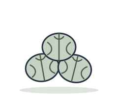

Macro
Protein
A building block of every cell, helping your body repair cells and make new ones.
What it does
- Every cell in your body contains protein
- Helps repair cells and make new ones
- Important for growth, and during pregnancy
- You can meet your needs with or without animal foods
Good to know
- Try plant-based protein foods every day: they can bring more fibre and less saturated fat
- You don’t need to eat large amounts to meet your needs
Where to find it
- Eggs
- Fish
- Lower-fat yogurt
- Lentils & beans

Nuts & seeds